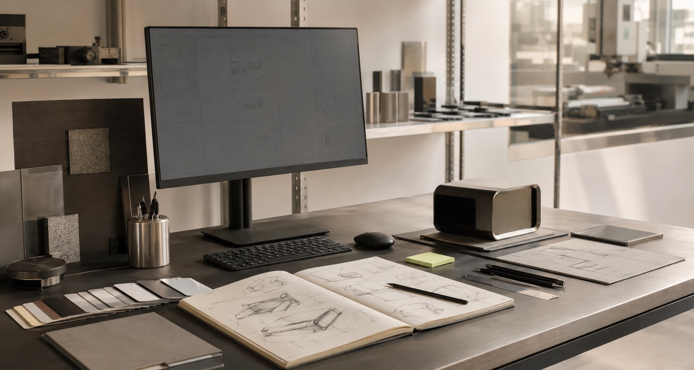

TECH STACK
전략을 화면과
제품으로 연결합니다.
- Product Strategy · UX Research
- Figma · Design System · Prototyping
- HTML · CSS · JavaScript · React
- Python · Data Visualization · AI Tools
01 / PROFILE
산업 현장의 복잡한 흐름을 이해하고, 사람이 바로 활용할 수 있는 디지털 제품과 브랜드 경험으로 바꿉니다. 전략부터 디자인, 구현까지 같은 문제를 바라보며 실행 가능한 결과를 만듭니다.
TECH STACK
CORE CAPABILITY
EXPERIENCE

02 / WHAT I DO
01 / DISCOVER
운영자 인터뷰, 업무 흐름 분석, 데이터 관찰을 통해 표면 아래의 병목과 기회를 찾아냅니다.
02 / DESIGN
서비스 구조, 화면 흐름, 디자인 시스템을 연결해 팀이 같은 방향으로 빠르게 움직이게 합니다.
03 / DELIVER
프로토타입과 프런트엔드 구현을 바탕으로, 실제 사용 환경에서 검증할 수 있는 결과를 만듭니다.
03 / IMPACT
산업·B2B 디지털 프로젝트
전략 및 경험 설계 참여
핵심 업무 흐름 단계 축소를 목표로 한
운영 화면 개선 경험
제품 전략, UX, 프런트엔드를 넘나들며
쌓아 온 실무 경험
04 / PRINCIPLES
기술보다 먼저, 실제 사용자가 쓰는 언어와 의사결정의 맥락을 이해합니다.
기능을 더하기보다 정보의 위계와 흐름을 정리해 더 적은 선택으로 목적에 도달하게 합니다.
디자인 파일에서 멈추지 않고, 개발과 운영 팀이 이어서 사용할 수 있는 기준을 남깁니다.
05 / CONTINUOUS LEARNING
EDUCATION
사용자 조사, 서비스 디자인, 정보 구조를 기반으로 한 제품 경험 설계
PRACTICE
생성형 AI와 자동화 도구를 활용한 리서치, 콘텐츠 제작, 프로토타이핑 실험
COLLABORATION
기획·디자인·개발·운영의 언어를 연결하는 문서화와 디자인 시스템 구축
LET'S BUILD SOMETHING USEFUL